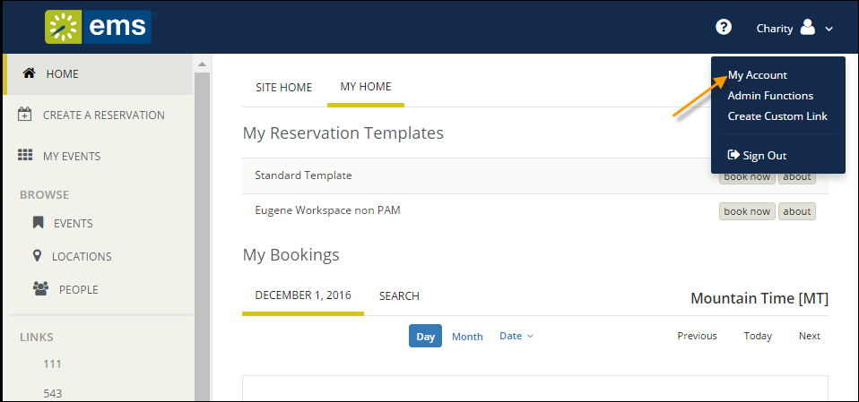
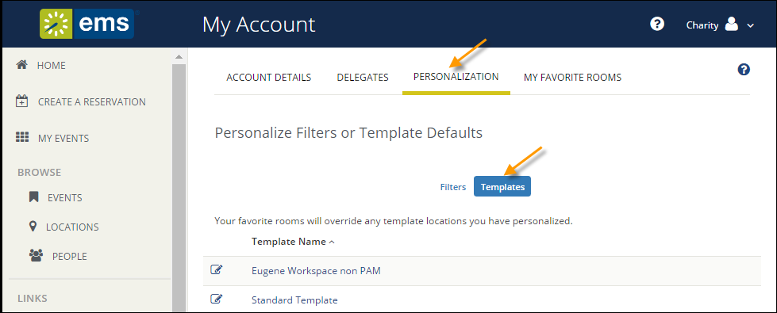

<?xml version="1.0" encoding="utf-8"?>
<html xmlns:MadCap="http://www.madcapsoftware.com/Schemas/MadCap.xsd" MadCap:lastBlockDepth="6" MadCap:lastHeight="2401.667" MadCap:lastWidth="2460">
    <head><title mt-export-translate="no">Establishing Booking Templates</title>
        <meta name="mt-type" value="application/x.deki-text" />
        <meta name="mt-unsafe" value="true" />
    </head>
    <body>
        <h1>Establishing Booking Templates</h1>
        <p>You can personalize&#160;booking templates to streamline your process for requesting rooms and&#160;making reservations (depending on your permissions). These templates appear on your personal {{product_webapp}} home page after&#160;you save&#160;them.</p>
        <table border="0" cellpadding="0" cellspacing="0" class="tip" style="border-collapse: collapse;">
            <tbody>
                <tr>
                    <td style="border-style: solid none none;border-top-color: black;border-top-width: 1pt;width: 68px;" valign="top">
                        
                        </img>
                    </td>
                    <td style="border-style: solid none none;border-top-color: black;border-top-width: 1pt;width: 863px;" valign="top">
                        <p class="NoteTipWarningText"><strong><span class="mt-color-669933">Concept:</span>&#160;</strong>Learn more about how booking templates work:</p><pre class="script" mt-export-translate="no" xml:space="preserve">
wiki.<MadCap:annotation MadCap:createDate="2017-11-07T13:09:36.0115021-07:00" MadCap:creator="Megan.Laub" MadCap:initials="ME" MadCap:comment="Wiki is the &quot;Booking, Templates, Requests, Reservations&quot; Topic info in WebApp User Guide. Maybe just link to the topic?" MadCap:editor="Megan.Laub" MadCap:editDate="2017-11-07T13:10:17.8836785-07:00">page</MadCap:annotation>("https://success.emssoftware.com/EMS_V44.1/Using_EMS/Using_the_EMS_Web_App/Key_Concepts_for_EMS_Users/Booking_Templates%2C_Requests%2C_and_Reservations", "Concepts: Booking Templates, Requests, and Reservations",NULL, true, 1)
</pre>
                    </td>
                </tr>
            </tbody>
        </table>
        <p>1. In the upper right corner of {{product_webapp}}, click on the dropdown next to your name and select&#160;<strong>My Account.&#160;</strong></p>
        <p>
            
            </img>
        </p>
        <ol start="2">
            <li class="Body">From the My Account page,&#160;click <strong>Personalization</strong>&#160;and then click the&#160;<strong>Templates </strong>button.</li>
        </ol>
        <p class="Body mt-indent-1">
            
            </img>
        </p>
        <ol start="3">
            <li>You can change the default values for a template only if your administrator has set your permissions accordingly:&#160;select the template you wish to change.&#160;The lower section changes to show&#160;options for the selected template</li>
        </ol>
        <table border="0" cellpadding="0" cellspacing="0" class="tip" style="border-collapse: collapse;">
            <tbody>
                <tr>
                    <td valign="top">
                        
                        </img>
                    </td>
                    <td style="border-style: solid none none;border-top-color: black;border-top-width: 1pt;width: 863px;" valign="top">
                        <p><strong><span class="mt-color-669933">Concept:</span> <![CDATA[ ]]></strong>Essentially, your settings here automatically populate field values and filter search results when you make room requests, so for instance, setting a Start Time here will set a start time for any room request you make using this template; setting a Setup Type will filter search results to only show rooms with that setup type.&#160;</p>
                    </td>
                </tr>
            </tbody>
        </table>
        <p>
            
            </img>
        </p>
        <table border="0" cellpadding="0" cellspacing="0" class="tip">
            <tbody>
                <tr>
                    <td>
                        
                        </img>
                    </td>
                    <td>
                        <p><strong>Tip:  </strong>If you select the&#160;<strong>Override location and time zone settings when I search for available space</strong>&#160;option under Locations, this means that whenever you book using this template, you can change the default location for this template during the booking process. For example, if your template Location was Denver and during booking you added Kansas, the template would be updated to Kansas going forward.&#160;</p>
                    </td>
                </tr>
            </tbody>
        </table>
        <ol start="4">
            <li>When you have finished making changes,&#160;click <strong>Save Changes</strong>.</li>
        </ol>
        <p>&#160;</p>
    </body>
</html>